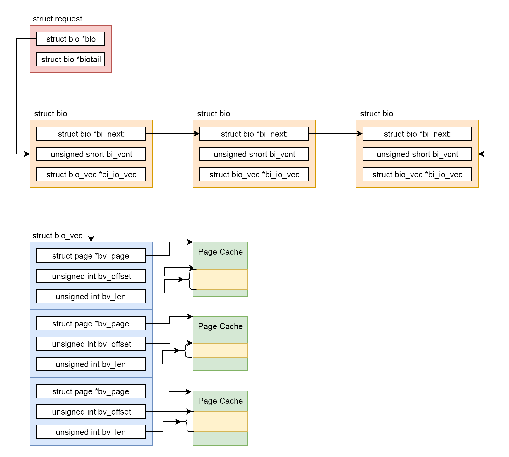

kafka线上集群方案部署
磁盘容量
- 新增消息数
- 消息留存时间
- 平均消息大小
- 备份数
- 是否启用压缩
带宽
- 利用率70%
- 留出2/3的资源
参考


生命的意义是成为你自己！



class Solution {
public:
bool isPalindrome(ListNode* head) {
if(head==NULL||head->next==NULL)
return true;
ListNode* slow=head;
ListNode* fast=head;
while(fast->next!=NULL&&fast->next->next!=NULL){
slow=slow->next;
fast=fast->next->next;
}
slow->next=reverseList(slow->next);
slow=slow->next;
while(slow!=NULL){
if(head->val!=slow->val)
return false;
head=head->next;
slow=slow->next;
}
return true;
}
ListNode* reverseList(ListNode* head) {
ListNode* pre=NULL;
ListNode* next=NULL;
while(head!=NULL){
next=head->next;
head->next=pre;
pre=head;
head=next;
}
return pre;
}
};


./kafka-topics.sh --create --zookeeper localhost:2181 --replication-factor 3 --partitions 3 --topic docker-log
__attribute__((nocommon))